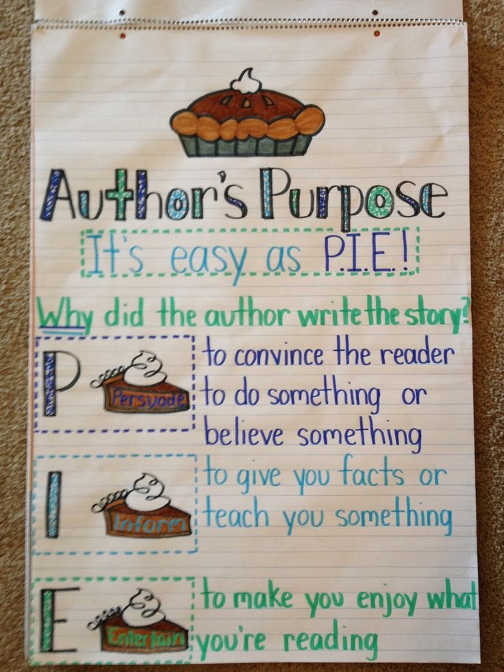
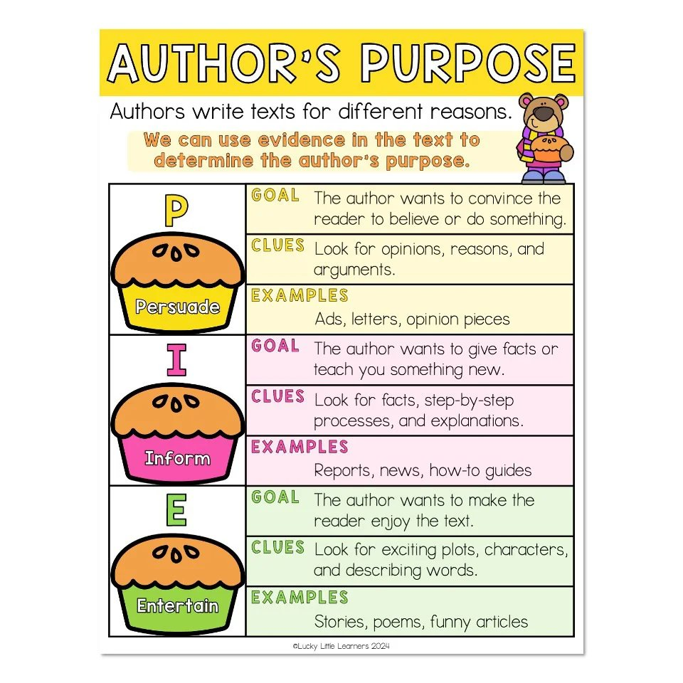
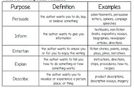
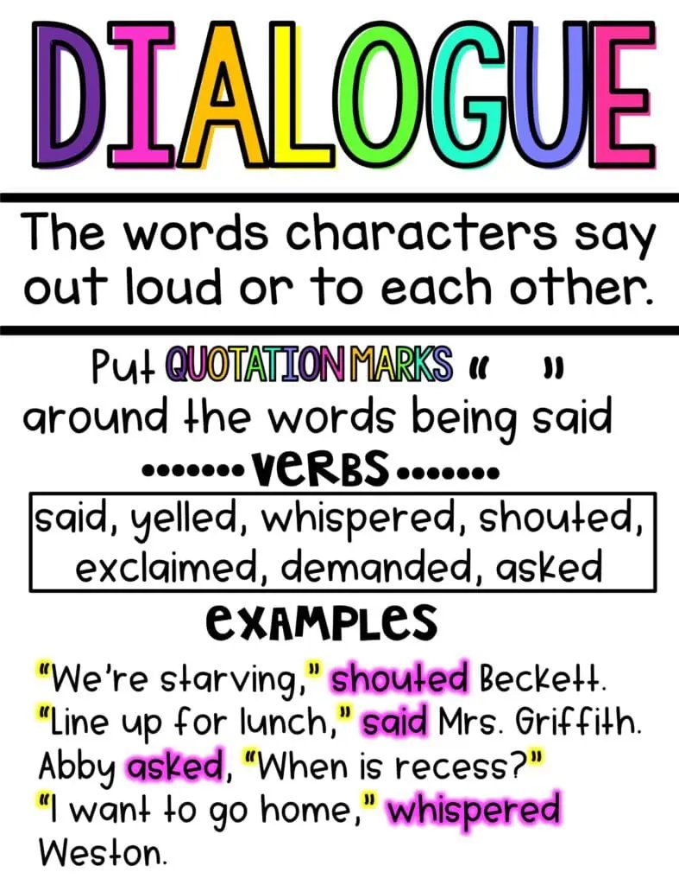
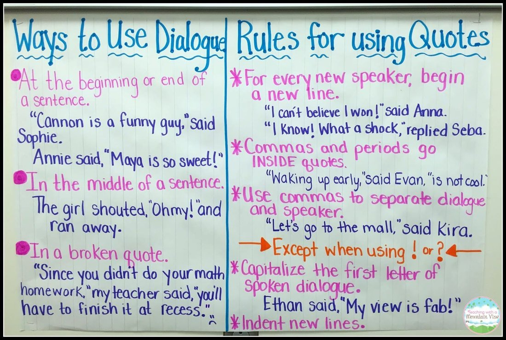

🏺 Week 19 of 35 — Unit 4: Our Past and Present
Unit 4: Our Past and Present | Dates: Jan 24 – Jan 28, 2027 | Week: 4 of 6 | Year week: 19 of 35 |
Class | Sunday | Monday | Tuesday | Wednesday | Thursday |
This week's updates / notes: | Tue Jan 26: Parent–Teacher Conferences — this is a SCHOOL DAY; students attend with parents (not a day off). 5B will circle back to teach Research later. Ramadan begins next week (Sun Feb 1). | ||||
Morning Meeting | Week #14 SEL Lesson- Click Here Objective for this week is: Working Together 5A- Individual Activity to Whole Group Meeting 5B- One to One Enrichment 5C- Morning Practice | Week #14 SEL Lesson- Click Here Objective for this week is: Working Together 5A- Individual Activity to Whole Group Meeting 5B- One to One Enrichment 5C- Morning Practice | Week #14 SEL Lesson- Click Here Objective for this week is: Working Together 5A- Individual Activity to Whole Group Meeting 5B- One to One Enrichment 5C- Morning Practice | Week #14 SEL Lesson- Click Here Objective for this week is: Working Together 5A- Individual Activity to Whole Group Meeting 5B- One to One Enrichment 5C- Morning Practice | |
Vocabulary & Spelling — Word of the Day (G5 + G3) Routine: give the definition first (no guessing) → students share where they might use it, similar/different words. Morphology, examples/non-examples, synonyms/antonyms & more on the vocabulary cards: Vocabulary Padlet (incl. Spelling: words Mon · test Thu) | G5: quotation — A group of words taken from a text or speech and repeated by someone other than the original author. G3: heritage — The traditions, achievements, and beliefs that are part of the history of a group or nation. Unit: literal — Taking words in their usual or most basic sense, without exaggeration or metaphor. | G5: format — To arrange or put into a specific form or layout. G3: invention — A new device, method, or process that has been created for the first time. Unit: inference — A conclusion reached by reasoning from evidence and clues rather than direct statements. ——— Spelling — introduce Week 19 lists (practice all week). Low (Building Spelling Skills, List 19): more, store, stand, star, blew, flew, new, stone, sting, ring High (Building Spelling Skills, List 19): shoes, clues, wound, junior, truth, duty, news, through, few, who, schoolroom, whose, conclusion, June, shampoo, cruel, choose, ruin | G5: cite — To quote or refer to a source as evidence or authority. G3: ceremony — A formal event held on a special occasion, often following specific traditions. Unit: analogy — A comparison between two things to explain or clarify an idea. | G5: enumerate — To mention items one by one; to list. G3: document — To record information in written, photographic, or other form. Unit: notation — A system of written symbols used to record information. | G5: attribute — To regard something as being caused by or belonging to someone or something. G3: attract — To draw others toward something by being interesting, appealing, or magnetic. Unit: context — The circumstances or setting that help determine the meaning of a word or event. Spelling test — Week 19 lists (Low: List 19 · High: List 19). |
READING | Guided Reading: Brainpop: Author's Purpose Warm-up (5 min): Ask students: "Why do authors write books? Can you name different reasons?" Show the PIE anchor chart: Persuade, Inform, Entertain. Watch the short video (2 min).  Practice (7 min): Read a short passage from The Day the Crayons Quit. Ask: "What do you think the author's purpose is? Why?" Discuss the text's clues. Closing (3 min): Quick Thumbs Up/Down Game — teacher says a sentence, students show thumbs up/down if it persuades, informs, or entertains. Rotations: SeeSaw PIE Activity · PIE Activity #2 · Text features Review · PIE G1 Activity/Reading Comp · Sort (Inform/Entertain) · PIE Practice · Dialogue · Monkey Dialogue IXL: G3 Dialogue · G4 Dialogue · G5 Dialogue · G3 Understanding Dialogue · G2 Understanding Dialogue Google Classroom/Worksheets: Resources/Worksheets, Boom Cards Author's Purpose · Author's Purpose 2, RazKids, EPIC, Book Bag Kahoot: Dialogue · Dialogue #2 Anchor charts / resources (from the 2025-26 plan): “Crayons are made from wax and come in many colors.” (Inform) “The crayons went on strike and wrote letters to their owner!” (Entertain)   | Guided Reading: Warm-up (5 min): "Has anyone ever convinced you to buy something? How?" Watch persuasive writing video (2 min). Practice (7 min): Read a short advertisement. Ask: "What is the author trying to do?" (Persuade) Discuss persuasive techniques (opinion words, emotional appeal, facts). Students write their own 2-sentence persuasive ad on whiteboards. Closing (3 min): Share a few persuasive ads. Ask: "What words did they use to persuade?" Mentor Text: Hey Little Ant by Phillip and Hannah Hoose; Don't Let the Pigeon Drive The Bus by Mo Willems; The Great Kapok Tree by Lynne Cherry; Earrings by Judith Viorst; One Word from Sophia by Jim Averbeck and Yasmeen Ismail | Guided Reading: Warm-up (5 min): Show two books — one nonfiction (Why Do Snakes Shed Their Skin?) and one fiction (There's a snake in my school). Ask: "Which one gives facts? How do you know?" Review informational text features (headings, facts, pictures). Practice (7 min): Read a short passage from an article (e.g., about sharks). Ask: "What is the purpose? What clues tell us this?" Students find three facts and share. Closing (3 min): Students pick up a nonfiction book and find one fact to share. | Guided Reading: Warm-up (5 min): "What is your favorite story? Why do you like it?" Introduce entertaining texts: stories with characters, humor, or drama. Practice (7 min): Read a funny passage from Don't Let the Pigeon Drive the Bus!. Ask: "Why did the author write this? What makes it fun?" Students act out a funny part from a story they know. Closing (3 min): Quick review game: teacher names a book, students say if it is Persuade, Inform, or Entertain. | |
Assessment | Formative: Listen to student responses in the Thumbs Up/Down Game to check understanding. | Formative: Ask students to give examples or samples of persuasive writing. | Formative: Listen to student explanations of why a text is entertaining. | ||
Differentiation | For struggling students: Provide a PIE anchor chart for reference. For advanced students: Let them brainstorm their own PIE examples. | For struggling students: Provide a word bank of persuasive words. For advanced students: Have them write a longer persuasive sentence. | For struggling students: Provide a list of story elements to guide discussion. For advanced students: Have them write their own short entertaining sentences. | ||
GRAMMAR (Sun & Tue) WRITING (Mon & Wed) Thu = catch-up IXL this week: Low: To be: use the correct past tense form (G2) High: Identify main verbs and helping verbs (G3) Stretch: What does the modal verb show? (G4) · Identify main verbs and helping verbs (G5) | Grammar (Sun) — Helping Verbs OBJ: Identify helping verbs and how they form verb phrases Packets — Low (K-1): K: Review: Sentences, G1: L1.2 Verbs (teacher introduces helping verb concept) · Mid (2-3): G2: L1.4 Verbs (teacher extends to is/are/was + -ing), G3: L1.4 Verbs (review), G3: L1.5 Linking Verbs (alongside) · High (4-6): G4: L1.4 Helping Verbs, G5: L1.11 Helping Verbs, G6: L1.12 Helping Verbs Historical writing: was traveling, had settled, were building, will be remembered. Grammar anchor charts / resources (from the 2025-26 plan): Show a short YouTube video explaining quotation marks. Example: Brainpop Dialogue Ask: “Why do writers use quotation marks?”  AND/OR  | Writing — Write a hook introduction Watch the Strong Introductions video; model a hook ("The country of ___ has a very ___ history/culture."); students write their own hook introduction naming their topic. Grammar link: vivid adjectives strengthen a hook. TWR: hooks with frames, not from scratch — model the same hook three ways (question / surprising fact / description); Low copy-adapts a modelled hook; Med completes "Did you know that ___?"; High tries two hook types and picks the better. Mentor: the report exemplar (Research Padlet) — read ONLY its introduction and name the hook it uses. IXL: Topic sentences (G2) — Topic sentences (G3) — Stretch: Best topic sentence (G4) — G5 | Grammar (Tue) — Linking Verbs OBJ: Identify linking verbs connecting subjects to describing words Packets — Low (K-1): K: Review — Common and Proper Nouns, G1: L1.2 Verbs (review for context) · Mid (2-3): G2: L1.4 Verbs (teacher intro linking with to be), G3: L1.5 Linking Verbs · High (4-6): G4: L1.5 Linking Verbs, G5: L1.12 Linking Verbs, G6: L1.13 Linking Verbs The journey was difficult. | Writing — Write body section 1 from your notes Model turning Category 1 notes into a paragraph of facts in the student's own words, naming the source ("According to..."); students write body section 1 from their organized notes. TWR: draft FROM the outline — each jot becomes one full sentence, ticked as used; combine two related facts with 'and' or 'but' ("Then pearls were valuable, but now oil is."). Differentiation: Low/Med paragraph frame, one sentence per fact; High adds a transition sentence into body 2. Resources: co-built rubric (mid-point self-check) | Catch-up day — reteach or extend this week's grammar and writing; finish unfinished drafts; assign this week's IXL practice (links in the left column: Low = reteach, High = consolidate, Stretch = extension). |
MATH Pacing W18 · B6 Ratio W16–W18 | |||||
Objective | |||||
Differentiation | Each lesson includes opportunities for partner practice, common misperceptions, independent practice, and a challenge question for differentiation. | Each lesson includes opportunities for partner practice, common misperceptions, independent practice, and a challenge question for differentiation. | Each lesson includes opportunities for partner practice, common misperceptions, independent practice, and a challenge question for differentiation. | Each lesson includes opportunities for partner practice, common misperceptions, independent practice, and a challenge question for differentiation. | N/A |
EXPLORER 3-day plan (Mon–Wed) Reading Pictures as Evidence IXL this week: Low: Identify Land Features Using Photographs (Gr 3) · High: Identify Primary and Secondary Sources (Gr 4) Stretch: Land Features Using Satellite Images (Gr 4) · Land Features Using Photographs (Gr 5) | Review / catch-up — revisit last week's Explorer learning; finish unfinished investigations or SeeSaw posts; preview this week's topic. | Mon · Hook + Investigate ▶ Hook video: ‘Doha Before’ — Shafeek Arakkal (real old-Doha footage, ~3 min). Vocab (kept): evidence, picture, detail, change. Investigate (kept): ‘reading pictures’ — a picture gives clues (evidence) about the past. Class set: old-Doha photos (Corniche, Souq Waqif, Westbay, Airport, QNB Bank, Arch Roundabout — 1950s–2019). Photo set: Old-Doha photo class set (Corniche, Souq Waqif, Westbay…) — ADD PADLET LINK Objective: Read an old photo as evidence of the past. Assessment: Name one detail in a photo that shows it is old. Differentiation: Name a detail with support / name a detail with some support / explain the evidence independently. | Tue · Apply + Record Apply: compare an old-Qatar and a modern-Qatar photo (from Monday’s old-Doha photo set, e.g. Doha Corniche 1950s–2019 or Souq Waqif 1966) — list the details and explain then vs now (‘Reading Pictures – Evidence’ sheet). Worksheet: 'Reading Pictures — Evidence' sheet — ADD PADLET LINK | Wed · Review + Check Review: how do pictures help us learn about the past? Quick check. | Review / catch-up — consolidate Mon–Wed learning; complete recordings/reflections; reteach or extend as needed. |
Closing Circle (SELG) | |||||